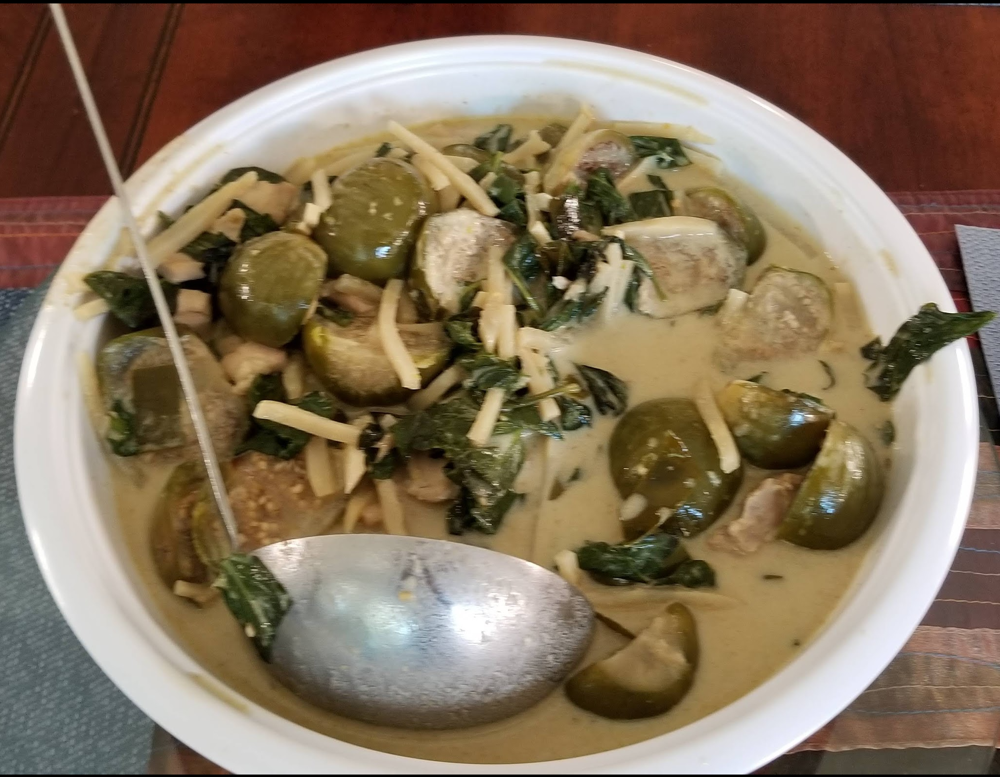

Thai Green Curry Chicken (Gaeng Keow Waan)

Ingredients
- 1 kg chicken thighs, boneless, skinless, cut into 1-inch pieces (for tofu, see note)
- 4 oz bamboo shoots, canned (sliced or strips)
- 500 g Thai green eggplant (quartered) (Optional)
- 240 ml coconut milk, divided
- 30 g green curry paste
- 450 ml vegetable stock (2 C)
- 15 g palm sugar (1 tbs)
- 15 ml fish sauce (1 tbs)
- 3-4 kaffir lime leaves, roughly torn
- 1 C Thai basil
Directions
- Reduce Coconut Milk: Simmer 120 ml coconut milk until thick and oil separates (if it doesn't separate, proceed).
- Fry Paste: Add curry paste and sauté over medium, stirring constantly, about 2 minutes until fragrant. Add a little coconut milk if it sticks.
- Add Chicken: Stir in chicken thighs (and eggplant, if using) to coat with paste.
- Simmer Curry: Add kaffir lime leaves, vegetable stock (reserve some), remaining coconut milk, sugar, and fish sauce. Simmer 10-15 minutes until chicken is tender. (If using eggplant, simmer 20-25 minutes.)
- Finish: Add bamboo shoots and bring to a boil. Add peppers now if you want them softer. Remove from heat.
- Adjust & Serve: Taste and adjust fish sauce/sugar. Stir in Thai basil and spur chilies or bell peppers. Serve with jasmine rice.
Chef's Notes
- About 30 g of green curry paste delivers a medium heat (3 stars in a Thai restaurant). Adjust to taste.
- Blend Thai basil leaves and water with an immersion beldner and add to the curry for a brighter green color.
- Use soy sauce or coconut aminos in place of fish sauce for a vegetarian version.
- Cane sugar can be used instead of palm sugar without issue.
- To make this dish vegetarian with tofu, use firm or extra‑firm tofu. Drain well and shallow-fry until crisp before adding to the curry.
The Gumbo Page
Michael Fritsche
mbf@fritsche.org